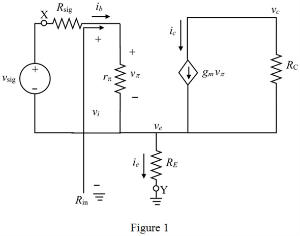
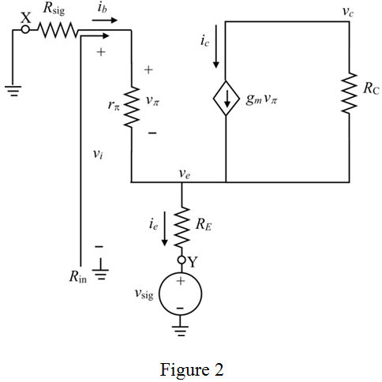

Step 1:
(a)
Refer to the circuit diagram of general amplifier in Figure P6.127 in the textbook.
Neglecting the early effect implies that early voltage,  is infinity or the ac output resistance,
is infinity or the ac output resistance,  is open circuited.
is open circuited.
Open-circuit the output resistance,  and draw the small-signal model.
and draw the small-signal model.

Step 2:
Use Ohm’s law to write the expression for the input resistance,  .
.
Write the expression for base current.
Apply voltage division rule at node  .
.
Write the expression for emitter current.

Substitute the expression for  .
.
Substitute this expression for  in the equation of
in the equation of  .
.
Substitute this expression for  in the equation of
in the equation of  .
.
Step 3:
Apply voltage division rule at node voltage,  .
.
Rewrite the expression.
Apply voltage division rule at node,  .
.
Rewrite the expression.
Step 4:
Multiply the equations.
Substitute the expression of  .
.
Therefore, the expression for is, .
Step 5:
Find the voltage across the resistor  .
.
Rewrite the expression.
Find the voltage across the resistor  .
.
Substitute expression of in the equation of .
Substitute for .
Apply Kirchhoff’s voltage law around the input side.
Divide the equations for .

Therefore, the expression for is, .
Step 6:
(b)
Connect the source voltage,  at node Y and ground the node X.
at node Y and ground the node X.
Open-circuit the output resistance,  and draw the modified small-signal model.
and draw the modified small-signal model.

Step 7:
Find the voltage across collector resistor

.
Rewrite the expression.
Find the current flow through the resistor  or
or  .
.
Substitute the expression for  .
.
Apply voltage division rule at node,  .
.

Apply Kirchhoff’s current law at node,  .
.
Substitute the expression for .
Substitute the expression for  .
.

Step 8:
Rewrite the equation and simplify.
Simplify further.
Step 9:
Recall the expression.
Divide the numerator and denominator by .
Thus, the expression for  is .
is .